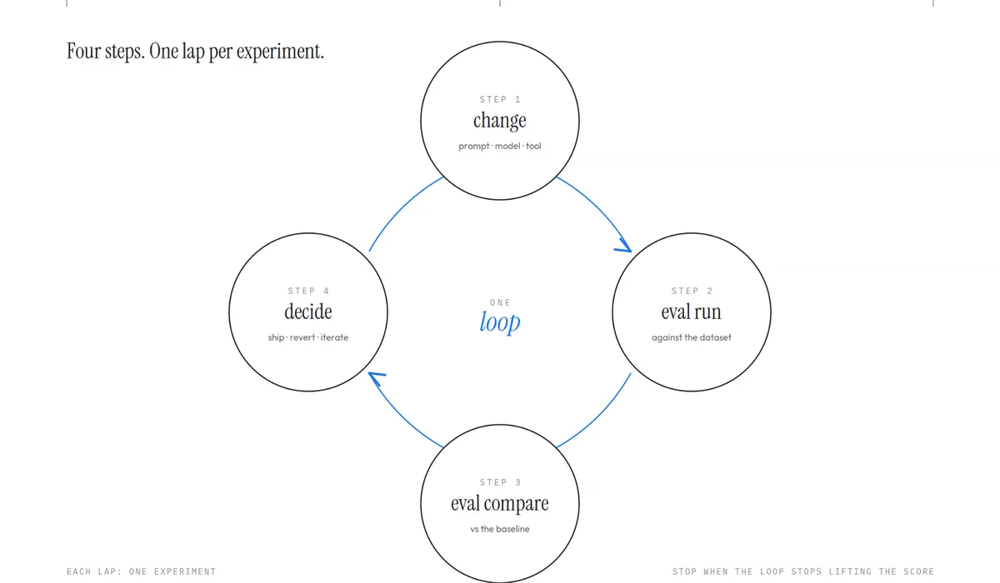

代理品質爬山術：一行 system prompt 的退步，該在評分表上現形
導讀原文：Google Developers 實作導覽「Hill-Climbing Agent Quality with Agents CLI Evaluation」— 從第一次跑分到回歸追蹤、模型後端實驗與自動告警的 eval 迴圈
30 秒版本
Agents CLI 的 eval 命名空間用五個框架無關指令把「爬山」變成流程：generate 跑案例、grade 打分、compare 逐案對比、analyze 聚類失敗、optimize 自動改 prompt。原文用 v1.8.0 內附的 LangChain 模板示範，四個案例由 gemini-3.8-flash 當評審，基準平均 4.00；誤把 system prompt 換成主廚人格後掉到 2.75，退步 1.25 分；它能編譯、能跑，lint 與單元測試全攔不到，只有 eval 迴圈能在上線前用分數揭露它。
- 五個指令刻意做小、框架無關，要能塞進每一次改動。
- 基準 4.00＋標準差 1.41 比滿分 5.0 健康：有落差才有坡可爬。
- 平均分會誤導：同為 2.75，主廚人格與換小模型是兩回事。
Demo 會動，和一直在動，是兩個問題
原文開場把兩種能力分得很清楚：做出一個在 demo 上會動的代理，是一個週末的事；做出一個在模型升級、工具更換、對話形態改變後仍然會動的代理，靠的是一個迴圈。團隊寫測試案例、跑一輪、打分、讀失敗的地方、改代理、再跑一次；分數上升就是好改動，下降就回退。這樣週復一週，代理會慢慢逼近「模型＋工具＋prompt 合起來所能做到的」上限——品質工程把這件事叫爬山（hill-climbing）。
Agents CLI 的 eval 命名空間就繞著這個迴圈設計，指令刻意做得小而框架無關：eval generate 讓代理對一組案例跑出軌跡、eval grade 替軌跡打分、eval compare 把兩次結果並排 diff、eval analyze 把失敗聚類成主題、eval optimize 對代理的 prompt 跑一輪自動爬山。
示範用的骨架是 Agents CLI v1.8.0 內附的 LangChain 模板，一行指令建好專案就帶著三個東西：tests/eval/datasets/basic-dataset.json 的資料集、tests/eval/eval_config.yaml 的設定，以及 tests/eval/response_quality.py 這個自訂的 LLM-as-judge 指標。指標的定義很樸素：以 gemini-3.8-flash 當評審，就 accuracy、relevance、clarity 三項給 1–5 分。內建資料集只有一個過於簡單的案例，不足以爬山，作者第一步就是把它擴成四個探測不同行為的案例：打招呼、mock 工具會固定回「起霧」的舊金山天氣、工具會走預設值的羅馬天氣，以及一題代理必須自己決定怎麼處理的離題問題（2024 世界大賽誰奪冠）。四個案例刻意小——原文的說法是，迴圈要在資料集小到每次改動都跑得動時才划算。
一輪爬坡實際長什麼樣
原文附的迴圈圖把一輪實驗拆成四步：改動、跑分、對比、決定。每一輪只做一個實驗，而停手的條件是「迴圈不再把分數往上抬」。

change：只動 prompt、model 或 tool 其中一項
實驗單位要小。原文的兩次示範各自只動一處：一次只換 system prompt 字串，一次只把 gemini-3.8-flash 換成 gemini-2.5-flash，其餘條件不動。
eval generate ＋ eval grade：把案例跑成有分數的軌跡
generate 逐案驅動代理並輸出軌跡，grade 依 eval_config 指定的指標打分。基準跑的結果是 4 個案例、4 個有效、0 個錯誤，mean 4.0000、stdev 1.4142，並存下完整 JSON 與 HTML 結果檔。
eval compare：把兩份結果檔並排，問「哪一案動了」
compare 讀進兩份結果檔，輸出結構化 diff，列出哪些 key 變了、哪些沒變（本次變動的是 eval_case_results 與 metadata.creation_timestamp），differences 再給出逐案的基準值與候選值。原文建議用 jq 或小支 Python 把訊號抽出來。
decide：分數下去就回退，上去才 ship
誤換主廚人格那一輪，平均從 4.00 掉到 2.75、標準差從 1.41 收窄到 0.96；退步 1.25 分於是成為回退的理由，而不是一段被 code review 放行的「一行字串」。（編輯推論：這裡的「決定」仍由人做；原文的迴圈圖只界定決策點，沒有描述自動回退機制。）
−1.25 只是警報，逐案差異才是地圖
平均分只告訴你有事，逐案 diff 才告訴你哪裡有事。主廚人格那一輪，四個案例三降一持平：greeting 5.0 → 4.0（聽完「hello」就先推一份食譜）、sf_weather 4.0 → 2.0（不理已註冊的 get_weather 工具，自己編天氣）、rome_weather 2.0 → 2.0（基準就已在幻覺，主廚人格沒讓它更糟）、off_topic 5.0 → 3.0（答了世界大賽，但硬要附食譜）。原文的重點：單元測試抓不到 sf_weather 這種壞法——程式跑得動、工具也還註冊著，變的是模型對工具的行為，只有把回答放回上下文打分的端到端 eval 才會浮現。

接著是換模型後端。把 system prompt 還原成「helpful assistant」、只把 gemini-3.8-flash 換成 gemini-2.5-flash，平均一樣掉到 2.75、幅度和主廚人格那次相同——但逐案故事完全相反：greeting 5.0 → 5.0、rome_weather 2.0 → 2.0 原封不動，sf_weather 4.0 → 3.0 只掉一分（措辭略不漂亮），跌幅絕大多數集中在 off_topic 5.0 → 1.0（4 分跌幅中的 3 分）：便宜模型以「該事件尚未發生」為由拒答（原文歸因為訓練截止的產物），被評審重扣。
原文因此下了一個很實用的判斷：只看平均，你會說 gemini-2.5-flash 和主廚 prompt 一樣糟；看逐案，你會說它對前三類工作負載是合理替換，代價是暴露了「處理近期事件類離題問題」這個真實限制。要不要換，取決於線上問題分佈比較像前三案還是第四案。
換模型實驗的兩個但書：其一，模型替換會和 prompt 互相作用——為強模型調過的 prompt 搬到弱模型上常會漏能力，正確的比較是「弱模型＋替它調過的 prompt」對「強模型＋自己的 prompt」。其二，評審由 Vertex AI Eval Service 呼叫，兩次比較中評審固定不變；換評審是另一個實驗，要分開做。
把迴圈接上排程、告警與自動改 prompt
Agents CLI 本身不附排程器，但 eval 指令被設計成能直接塞進既有基礎設施。原文的模式是 cron 或 Cloud Scheduler 每晚跑一次 generate＋grade，結果寫進固定路徑：對一份穩定的回歸資料集（從數十到數百案，比內圈那四個大得多，因為一天只跑一次）跑分，可以抓出模型廠商悄悄升級模型、工具資料變動、依賴位移造成的漂移——這些都不是你這一側改了什麼。
但每天產一個沒人看的檔案不算告警。原文再包一支腳本：把新一輪的平均和基準（前一次，或一個已 commit 的 known-good）相比，跌幅超過門檻就以非零 exit code 結束，讓外層排程器去觸發通知。拿示範資料實跑：基準 4.000、候選 2.750、門檻 0.1，輸出 FAIL: mean dropped 4.000 → 2.750 (drop 1.250 > threshold 0.1)、exit 1；自己比自己則是 drop 0.000、exit 0。（腳本內建預設門檻是 0.05。）（編輯推論：原文只說非零 exit code 會由 cron job、Cloud Scheduler 或 GitHub Actions 接走去發通知；把它當成合併前的閘門是同一機制的延伸，原文未示範這種用法。）
最後一塊是 eval optimize：對 ADK 專案，它用 GEPA 框架對 prompt 跑自動爬山——吃資料集與目標指標，提出 prompt 變體、逐一打分、留下變好的、再迭代，最後輸出一組按分數排序的候選 prompt 交給人審。LangChain extension 目前不支援。原文強調兩個理解點：它只動 prompt，代理的工具、結構與模型固定不動；而 GEPA 有時找到真改進，有時只是找到更貼合該指標措辭的變體（對指標過擬合），審查的人就是控制項。
原文最後丟出一個反直覺的觀察：他們近期做的一項對照研究發現，使用 agents-cli 的 coding agent 跑出的 eval 次數是沒用它的四倍，但「跑完 eval 之後真的去改代理」的頻率和基準差不多。品質增益來自 skills 在一開始就放進 build 的東西，而不是內圈的反覆迭代——eval 是品質的必要條件，但品質來自對 eval 結果採取行動。配套的紀律也很硬：先有小而具代表性的資料集（四案一分鐘內跑完，才會每次改動都跑），而不是三百案、跑一小時、最後變成 release gate、甚至成為沒人再跑的 shelfware（束之高閣）的資料集；要快照結果檔而不是分數（三週後回歸浮現時，只有完整 JSON 能讓 compare 指出是哪一案動了）；資料集是輸入、eval config 是期望，兩者分開存、都進版控。
帶走三件事
滿分是紅旗，會掉分的基準才是資產。平坦的 5.0 只代表兩件事：代理完美（罕見）或資料集太簡單。4.00 配 1.41 的標準差才是有坡可爬的地形——沒有分數落差，eval 就沒有訊號，迴圈也就無從抬升。
回歸的單位是案例，不是平均。兩次實驗平均都是 2.75，結論卻相反：主廚 prompt 是把多數案例壓進同一段平庸區間（標準差收窄到 0.96），換小模型則是兩案原封不動、兩案下滑（sf_weather −1、off_topic −4，跌幅集中在 off_topic）。願意看逐案分佈的團隊，才分得出「全面退步」與「一種工作負載的極限」。
eval 的價值在有人對它動作。四倍 eval 次數沒有換來四倍修正，這是原文最該記住的自證。分數要接上非零 exit code、告警與回退權限，才從「報告」變成「閘門」——否則只是把不回歸的證據存得更整齊。
同一主題的其他館藏
導讀為本站編輯內容（AI 摘解自官方原文與館藏重點，非官方文件）；引述數據、指令與案例分數均出自原文的示範專案（Agents CLI v1.8.0 內附 LangChain 模板、四案例、gemini-3.8-flash 評審），小標與分節為編輯整理。